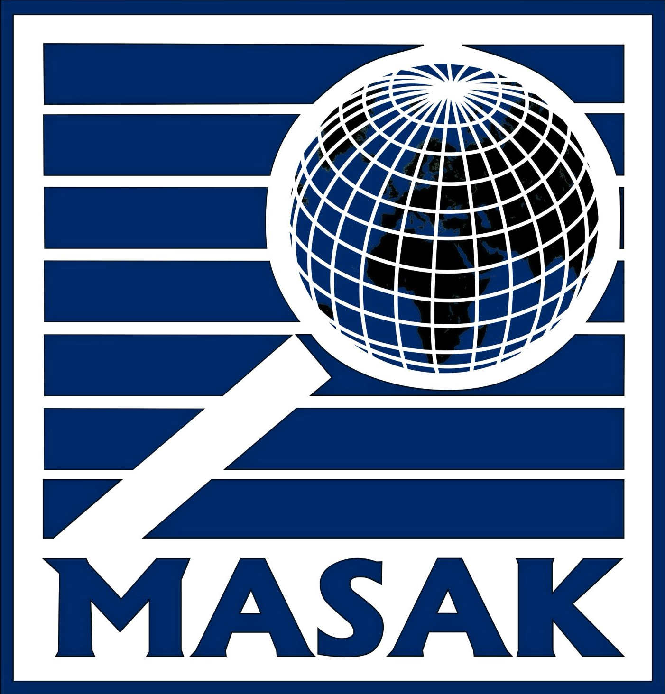
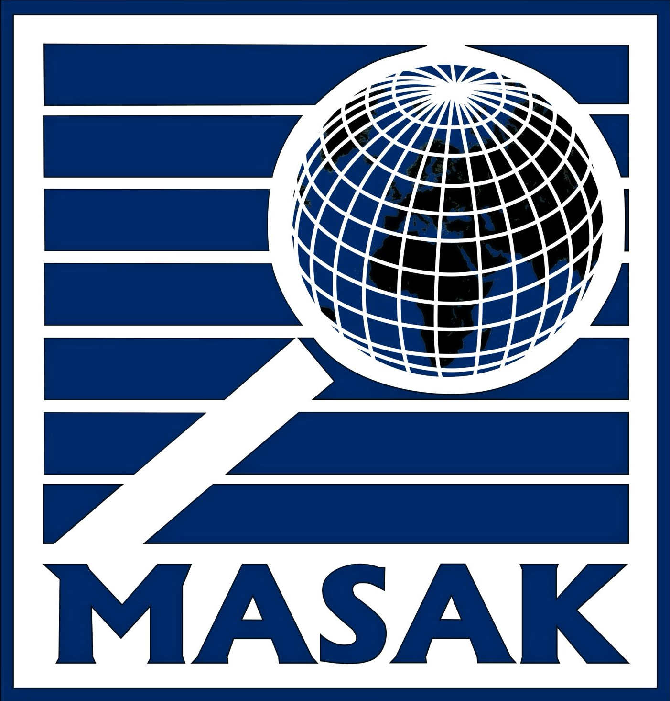

BU İNTERNET ADRESİ ERİŞİME KAPATILMIŞTIR
Bu internet adresi, Türkiye Cumhuriyeti'nin ulusal güvenliğine yönelik yasa dışı siber faaliyetlerde bulunması nedeniyle, Milli İstihbarat Teşkilatı (MİT), Jandarma Genel Komutanlığı (JGK), Ulusal Siber Olaylara Müdahale Merkezi (USOM) ve Mali Suçları Araştırma Kurulu (MASAK) tarafından yürütülen koordineli operasyonlar neticesinde ele geçirilmiş ve erişime kapatılmıştır.
Yasa dışı faaliyetlerde bulunan siber teröristlere karşı önleyici ve caydırıcı tedbirler kararlılıkla sürdürülecektir.


 
